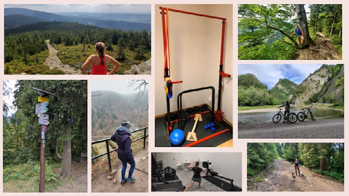

Sport
Sport gives me energy and takes care of my body, so I can eat as much as I want without guilt, so how can I not like it! Sitting pointlessly is not for me. It doesn't matter weather I swim in the swimming pool, a lake or an ocean, weather I walk on the pavement, run in the forest or hike in the mountains, as long as, I can feel that my body moves.
I used to run, play volleyball, ride a bike, go for step and basic dance classes. Right now, I train routinely at the gym, walk with my dogs a few times a day, go swimming and hike during my holiday. I'm not sure what is ahead of me, but I know one thing - I will always keep moving!
